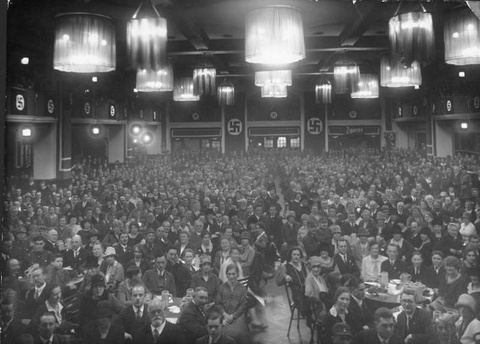
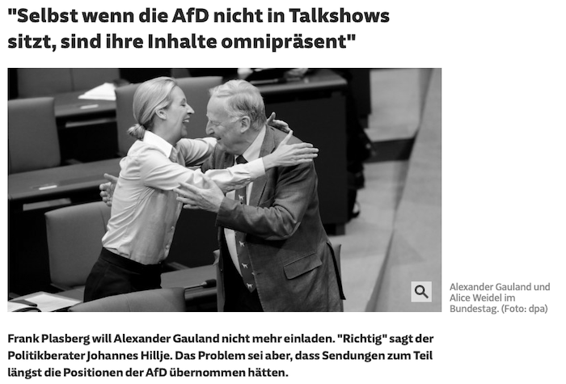

In this SNSF Ambizione project (4 years: 690'000 EUR), me and my research team try to understand the causes and consequences of radical party emergence. Radical candidates and parties -- here defined as parties located at the very extremes of an imagined political left-right scale -- are on the rise in democracies. Most recently, Germany experienced the entry of the radical right party AfD into parliament (2017), while in Spain (Podemos) and Greece (Syriza) radical left parties have entered parliament or enjoy governmental office. Such events of radical party entry are destined to have crucial consequences for the political and economic landscapes in modern democracies: established parties might adapt their agendas and positions in an effort to contain the voter potential of the new radical competitor; radical parties could influence media agendas in a disproportionately severe way; public priorities are likely to polarize as a result; and governments are likely to develop policies (e.g. local investment policies) to contain the electoral threat of radical party emergence. While a rich and burgeoning literature has emerged investigating the rise of radical parties, until today conceptual, theoretical and empirical challenges remain to be addressed.
The project is build on five key research blocks:

How do extreme parties come into existence in the first place? How do these parties successfully mobilize their activists? Which role does social media play to simplify meetings? Do cultural components play a role when and where extreme parties successfully emerge?
Does the entrance of extreme parties into parliaments affect public opinion? Does it legitimate extreme opinions? And, do some parts of the public mobilize against extreme opinions?
Does the entrance of extreme parties into parliament affect other parties? And if so, do parties vary in their reactions to the extreme competitor?

How does the media react to extreme parties and their discourse?
How do today's extreme parties and societies compare to prominent historic cases? Which strategies, campaign slogans and rhetoric of today's extreme parties are influenced by the behavior of prominent role models in the past?